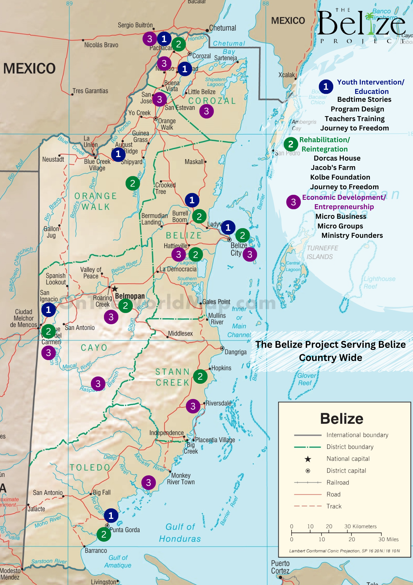

Loving People, Places, and Things to Life

The Belize Project is a ministry that serves other ministries' efforts, NGOs, and NPOs in Belize that are like-minded in our mission. Our mission statement is loving people, places, and things to life through Jesus Christ.
We engage in many projects supporting spiritual goodwill efforts, directly engaging in rehabilitation and reintegration, education, youth intervention, economic development, and entrepreneurship.
We support in diverse ways: materials, prayer, resources, finance, mentoring, training, encouragement, and much more. The vision of The Belize Project is to find those in Belize who are making a difference, and we walk alongside them. Our ministry focuses on rehabilitation farms, halfway houses, safe homes, prisons, schools, churches, and micro-lending.
We are bringing awareness and partnering with others to cultivate more healing communities in Belize.